Current lab members

Amanda Fisher
I am a Professor of Botany and Curator of the Herbarium (LOB) at Long Beach State University. I regularly teach upper-level Botany courses in the Department of Biological Sciences (BIOL427, BIOL439). I am particularly interested in plant systematics and how flowers have evolved with pollinators. Some of my students work on floristics- the study of plant diversity in a particular place. I graduated from the University of Iowa in 2004 with a BS in Environmental Sciences on the Botany track. In 2005 I began a PhD in Biology with Dr. Scot Kelchner at Idaho State University, working on the systematics of the neotropical bamboo genus Chusquea. In 2011 I began an NSF-funded postdoctoral fellowship at Rancho Santa Ana Botanic Garden in Claremont, California to work on chloridoid grass systematics with Dr. Travis Columbus. Then in 2013 I had the pleasure of being an RSABG postdoctoral fellow, working with Dr. Lucinda McDade on the systematics of several Acanthaceae genera (Barleria, Dyschoriste). My recent work has been on resolving the Acanthaceae phylogeny using nuclear loci and investigating patterns of pollinator shifts and macro-evolutionary effects on floral morphology.
I am currently looking for undergraduate and MS students to research plant evolution and diversity. Please contact me if you are interested in joining the lab!
Amanda [dot] Fisher [at] csulb [dot] edu

Nicholas Rocha
is a MS student in the lab where he is working on a florula of the Lay, Glass, and Lower Filiorum Reserves of Palos Verdes Peninsula. He is also studying the population structure of a rare shrub that occurs on the Peninsula, Lycium brevipes var. hassei. He received his BS from Cornell University in Entomology and Plant sciences.
Diego Uribe
is working on the Justicia pollination project, primarily Justicia sonorae.
Yasmine Murad
is working on the Justicia pollination project, primarily Justicia sonorae.
Nickie Chanthavisith
has assisted Nick Rocha with molecular lab work and is working on the Justicia pollination project.
Nancy Nyugen
works in the herbarium, mounting and repairing specimens
Lab alumni
Leon Rubarts
worked with M.S. student Nick Rocha of the flora of Glass, Lay, and Lower Filiorum Reserves on Palos Verdes Peninsula. He graduated in 2026 and immediately left to hike the Pacific Crest Trail.
Miguel Aranda
worked in the herbarium, mounting specimens and organizing our seed cone collection.
Jaylin Leon
worked on the Justicia pollination project. She graduated with her B.S. in 2026.

Emily Fitzpatrick
completed their undergraduate honors thesis in the lab. Their thesis was titled “Tecate cypress management in the Cleveland National Forest. Persistence in the face of fire” Emily presented at the 2025 Botany conference and the Southern California Botanists Symposium. Emily is now a research scientist in the Dept of Integrative Biology at University of Texas, Austin
Jake Himelfarb
worked with Emily Fitzpatrick on tecate cypress
Kelsey Imrie
worked on the Justicia pollination project. In 2025 she was awarded the competitive Summer Research Assistantship from the CSULB Office of Research and Economic Development. She presented her project on variation in Justicia pollen production and pollinator adaptations in 2025. She is now a Biologist at AECOM.
Annie Le
was an undergraduate honors student in the lab. Her thesis was titled Vegetative anatomy and staminal development of American water willow, Justicia americana (Acanthaceae). She is now in Pharmacy School.
Ramses Cuellar de Lucio
volunteered in the lab
Valerie Tran
was an undergraduate honors student in the lab. Her thesis was titled “Examining the relationship between pollinators and pollen size and shape in Justicia (Acanthaceae)”
Tayahna Agtarap
worked on the Justicia pollination project and presented a poster on her research at the National Conference for Undergraduate Research and a talk at the Orange County Chapter of the California Native Plant Society. Tay participated in an REU program at Washington University, St. Louis in 2023
Kaya Sadi
worked on the Justicia pollination project
Ashley Galdamez
worked on the Justicia pollination project
Daniel Goldstein
worked on the Justicia pollination project. He is now in the Forensic Sciences Masters program at UC Davis.
Kylie Tran
worked on the Justicia pollination project
Van Nguyen
worked on the California Biodiversity Institute grant in the herbarium
Sara Ramirez
worked on the California Biodiversity Institute grant in the herbarium
Genesis Ruiz Esparza
worked on the California Biodiversity Institute grant in the herbarium
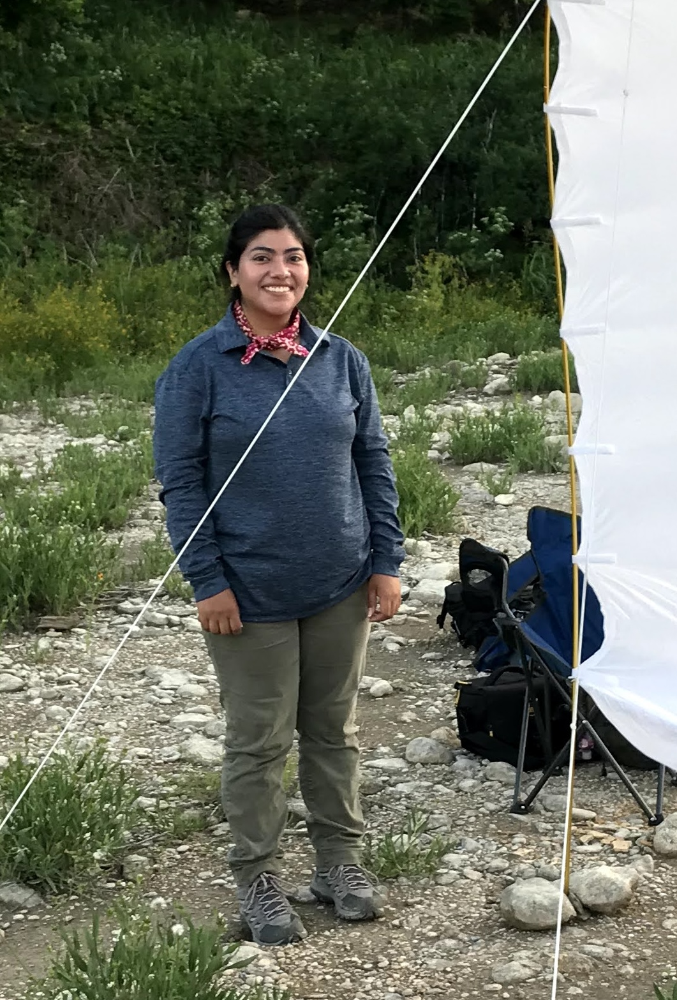
Josephine (Rodriguez) Palacios
did her MS research on the evolution of pollination in Justicia. Her work was funded by the National Science Foundation and she presented a poster at the 2021 Botany conference. Josie completed her BS in Biology at CSULB.
Mateo Quezado
worked in the CSULB herbarium, mounting and repairing specimens
Christian Caro
worked in the CSULB herbarium, mounting and repairing specimens
Karen Hernandez
worked in the CSULB herbarium, mounting and repairing specimens
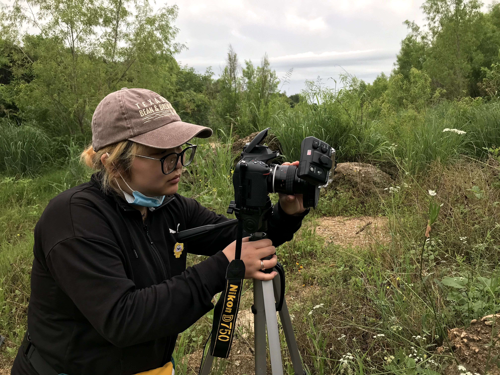
Yuting Wang
did her MS research on the phylogeny of the SAI clade of
Justicia and evolution of corolla and pollen forms in the
clade. Her work was funded by the National Science Foundation and she
presented a poster at the 2021 Botany conference and at the 2023 CSUPERB
symposium. Yuting completed her BS in Biology at CSULB.
Sona Karun
worked in the CSULB herbarium, mounting and repairing specimens
Laura Abonce
worked on Justicia pollination with Yuting Wang and Josie Palacios. She presented a poster on her research at the National Conference for Undergraduate Research.
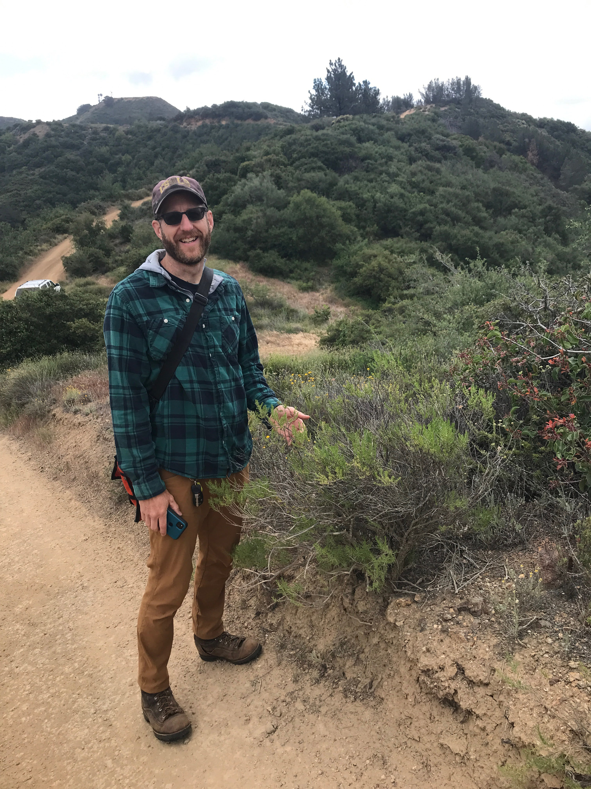
Daniel Donovan
did his MS research on the flora of Ladd Canyon in the Santa Ana
Mountains, Cleveland National Forest, California. His research was
published in the journal Aliso and he presented at the California Native
Plant Society conference in San Jose, CA in 2022. He is now a field
botanist at San Diego Museum of Natural History.
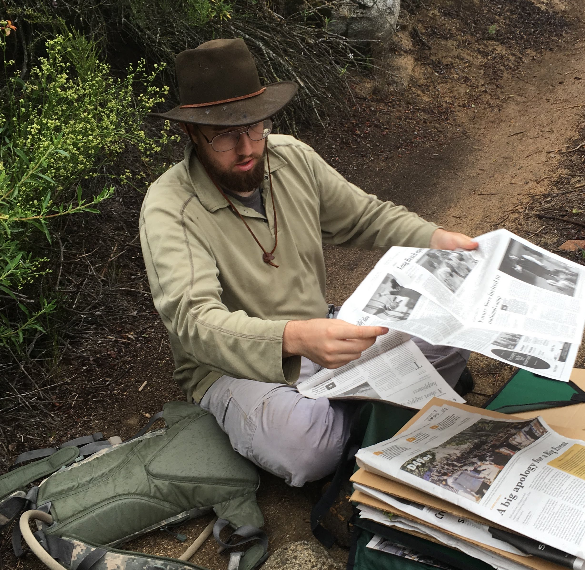
Harrison McGowan
did his MS research on the flora of the Chiquito Basin in the Santa
Ana Mtns, Cleveland National Forest, California. He received a
scholarship to attend the Systematics Research Institute at Rancho Santa
Ana Botanic Garden in Summer, 2018 and presented his work at the 2019
Botany conference in Tucson, Arizona. He is now an ecological consultant
in California. Harrison completed his BS at University of California,
Santa Cruz.
Amy Nguyen
was a BS student in the molecular lab. She is studying the anatomy of
chloridoid grass leaves to test if particular leaf anatomy traits are
correlated with the evolution of C4 photosynthesis subtypes. She
presented her research at the Fall, 2019 CNSM Research Symposium. Amy
was also an herbarium assistant, databasing for the California Phenology
Project.
Monica Soenjoto
was a BS UROP student in the molecular lab.
Marina Rice
was a BS student and the undergraduate Collections Manager of the
Long Beach State Herbarium and team leader for the California Phenology
Project. She also worked with MS student Harrison McGowan on the flora
of the Chiquito Basin. Marina is now a Genetic Counseling Assistant at
GeneDX
Nathan Ocampo
worked with Yuting Wang
Skye Idzinski
was a BS student and herbarium assistant. She databased for the
California Phenology Project.
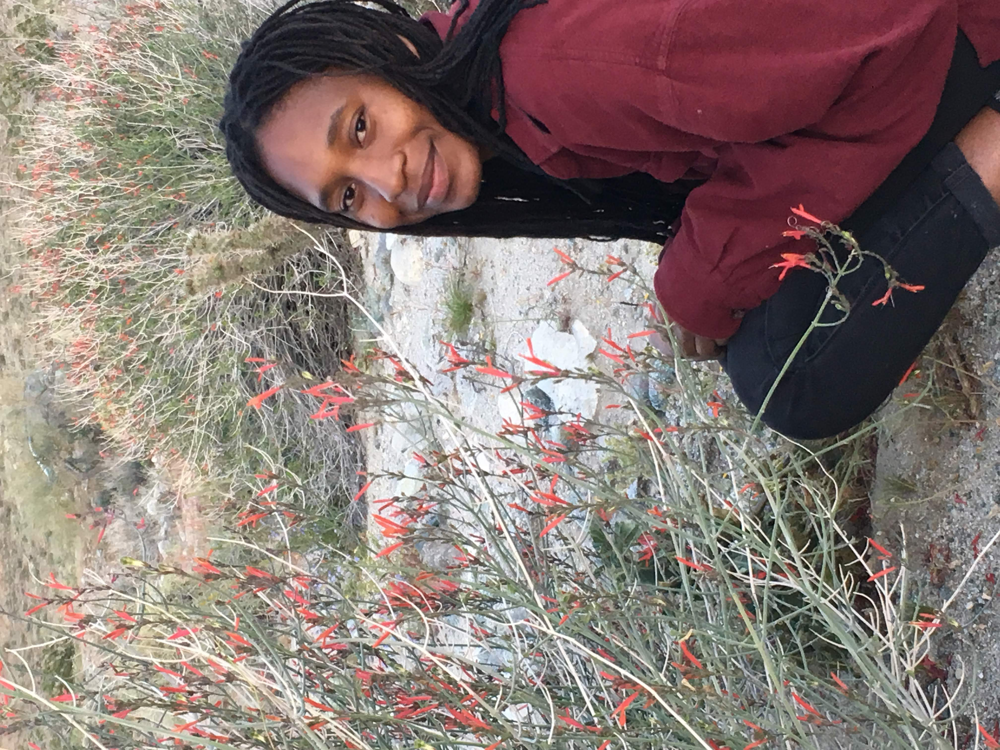
Laymon Ball
was a BS student who studied the rhizosphere diversity of chloridoid
grasses and the reproductive biology of Justicia californica.
Laymon was a PLANTS mentee for the Botany 2017 conference in Fort Worth,
Texas. She also received a scholarship to attend the Systematics
Research Institute at Rancho Santa Ana Botanic Garden for Summer, 2018.
In 2025 Laymon defended her Ph.D. in pollination biology from Dr. Laura
Lagomarsino’s lab at Louisiana State University.
Angel Barnett
worked on the California Phenology Project in the Long Beach State
Herbarium and graduated with a B.S. in Spring, 2019. They are now a
model and actor in New York.
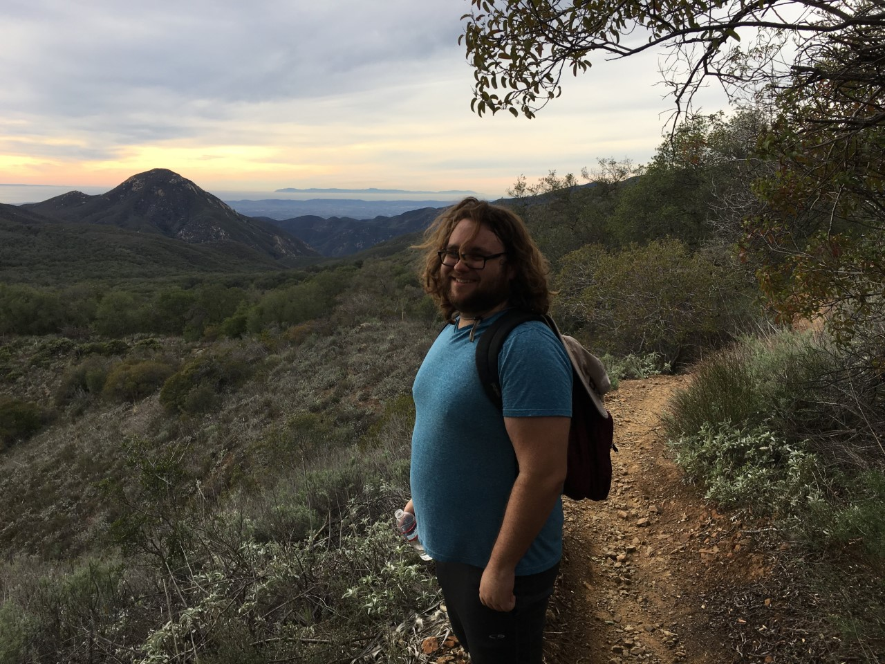
Robert Comito
was an MS student studying the molecular phylogeny of
Barleria (Acanthaceae) using RADseq. Robert completed a
Ph.D. in Botany at Rancho Santa Ana Botanic Garden and Claremont
Graduate University in 2024. He is a visiting lecturer of Biology at the
Claremont Colleges. Robert completed his BS at University of California,
Berkeley.
Sara Cuadra-Vargas
was a BS student and the undergraduate collections manager of the Long Beach State Herbarium (LOB). She was a pivotal member of the Long Beach State team for the California Phenology Project. After graduation Sara began an internship with the Long Beach Water Department, focused on the lawn to gardens program. She is currently a Conservation Biologist with the Xerces Society.
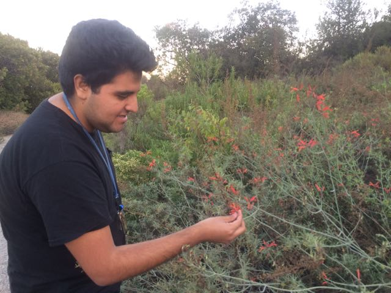
Joshua Arias
was an MS student studying the phylogenomics of Acanthaceae by
combining transcriptome and genome-skim data. He defended his MS thesis
in Spring 2019 and began working on cancer research at the National
Institutes of Health in Summer 2019 with Dr. Sonja Berndt. Josh
completed his BS at University of California, Irvine
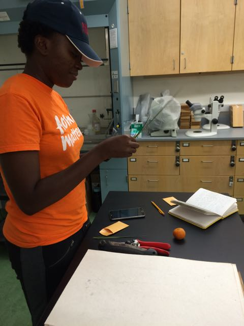
Nneka Aruoma
assembled transcriptomes of California cord grass Spartina
foliosa and sectioned leaves for her undergraduate honors thesis.
She graduated with her BS in Biology in 2018.
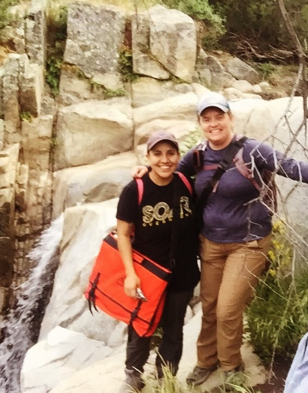
Bryana Olmeda
was the undergraduate collections manager of the Long Beach State
Herbarium (LOB) in Fall, 2018 and also a wetlands restoration intern at
Tidal Influence. Bryana graduated with their BS in Biology in December,
2018 and was a Seeds of Success intern with the Bureau of Land
Management in Socorro, New Mexico. Bryana presented a poster on the LOB
Herbarium at the 2019 Botany conference in Tucson, Arizona. They worked
for several years in the herbarium at California Botanic Garden. Bryana
completed a MS in floristics in Dr. Hannah Marx’s lab at University of
New Mexico.
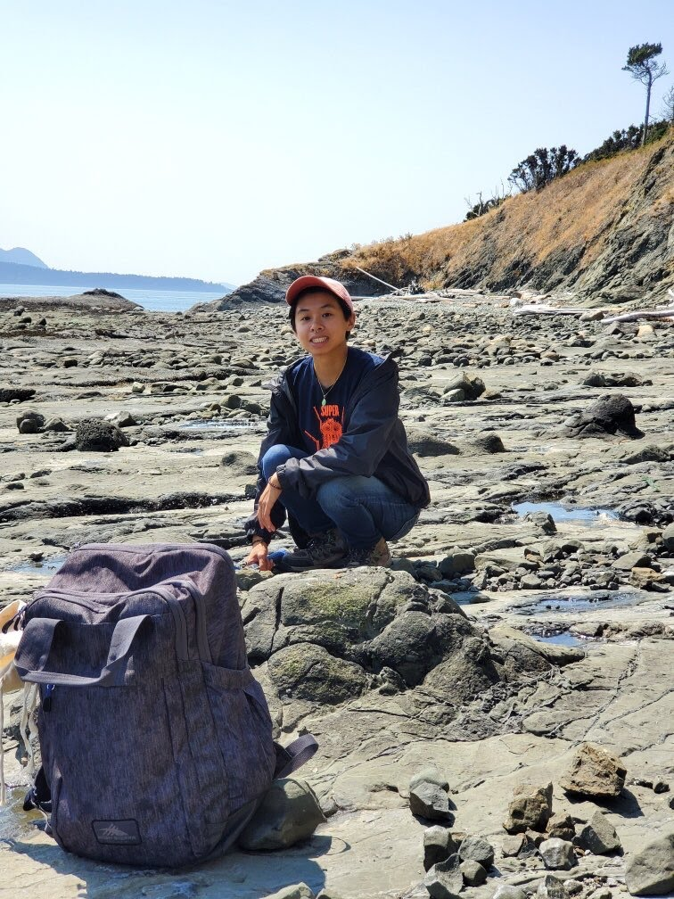
Keana Tang
was a BS student in the Long Beach State Herbarium (LOB) and an
intern at the Los Angeles Natural History Museum. She was formerly an
intern for the Trinity Shasta National Forest. She was also a PLANTS
mentee at the Botany 2018 conference in Rochester, Minnesota and
received a scholarship to attend the Systematics Research Institute at
Rancho Santa Ana Botanic Garden for Summer, 2018. She completed a MS and
PhD in Dr. Brian Atkinson’s Paleobotany lab at the University of
Kansas.
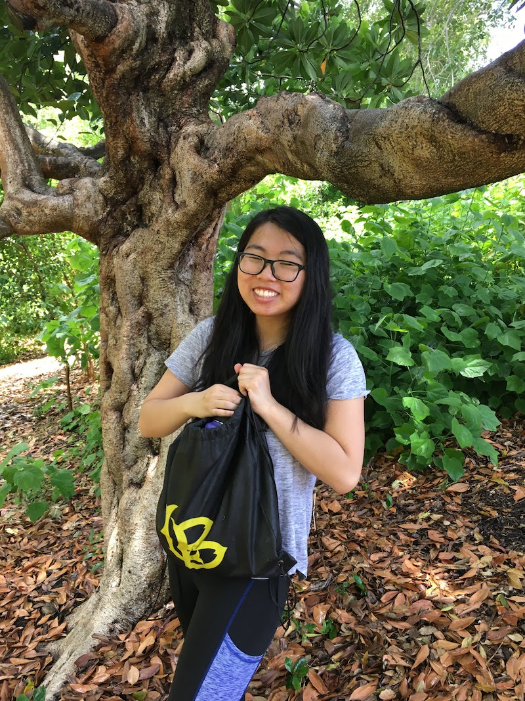
Emily Do
was a BS student working on Acanthaceae leaf anatomy and graduated in
December, 2018. She was awarded the Bennett and Peggy Kayser Research
Award in 2018 to collect leaf samples at the Huntington Botanic Garden
in Altadena, California.
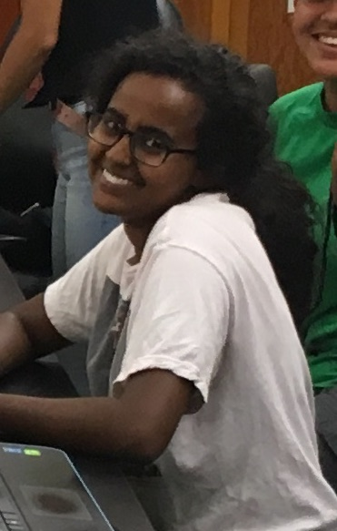
Semaria (Kassa) Mechal
was a BS student in the molecular lab and worked with Robert Comito
on a RADseq phylogeny of the genus Barleria (Acanthaceae). She
is a Family Nurse Practicioner
Mariangel Fernandez
was a BS student working with MS student Harrison McGowan on the
flora of the Chiquito Basin. She analyzed elevation and phenological
data for toyon (Heteromeles arbutifolia)
Brittany Betz
is a Biological Desktop Technician with SWCA Pasadena. In the lab she
co-authored the Flora of the Oasis de los Osos, a University of
California Natural Reserve on the edge of the Sonoran Desert. After
graduation she was a Seeds of Success intern with the Bureau of Land
Management in Bishop, California. She is now a Wetlands Project Manager
at SWCA.
Sierra (Coleman) Valladares
is a Managing Consultant/Biologist at VCS Environmental. She worked
on a checklist of the vascular plants of Pleasants Peak in the Santa Ana
Mountains.
Asusena Figueroa
worked on a checklist of the vascular plants of Pleasants Peak in the
Santa Ana Mountains.

Carolina Contreras
studied morphological variation in lodgepole pine populations in
Southern California and is pursuing a career in zoos and conservation.
Hannah (Garfin) Craddock
studied morphological variation in lodgepole pine populations in
Southern California and entered the CSULB MS GIS program and also worked
at Tidal Influence. She is now a Habitat Restoration Ecologist with
Glenn Lukos Associates
Karla Gonzalez
assisted with fieldwork for the Flora of the Oasis de los Osos.
Mark Noda
databased specimens in the LOB herbarium and is employed at Paragon
Labs
Krystiana Oberhammer
volunteered in the LOB herbarium. Kryssy is employed at KP
Environmental.
Bridgette Saroff
modeled the climatic factors affecting the distribution of
Justicia californica and is a nutritionist.
Chenyu Shen
studied the flowering duration of Justicia californica in
the Long Beach State greenhouses and is pursuing graduate school in
Biology
Renee Stewart
volunteered in the LOB herbarium
Alan Vera
databased specimens in the LOB herbarium and is pursuing medical
school
Jennie Nguyen
worked on scientific illustration in the lab and is now a veterinarian at Pasadena Humane Society